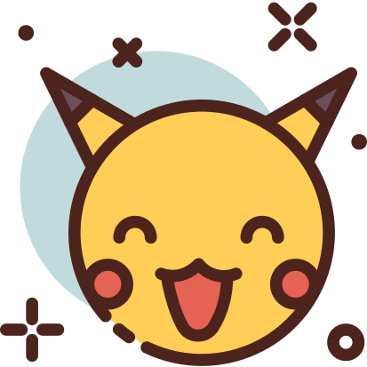

PokéCuriosidades!
A primeira geração teria 190 Pokémons
Isso mesmo, existiriam 39 a mais! Contudo esses 39 a mais foram deixados para serem adicionados aos jogosda II Geração.Os pokémons que também fariam parte da primeira geração incluem: Scizor, Shuckle, Heracross, Sneasel, Teddiursa, Ursaring, Slugma, Magcargo, Swinub, Piloswine, Corsola, Remoraid, Octillery, Delibird, Mantine, Skarmory, Houndour, Houndoom, Kingdra, Phanpy, Donphan, Porygon2, Stantler, Smeargle, Tyrogue, Hitmontop, Smoochum, Elekid, Magby, Miltank, Blissey, Raikou, Entei, Suicune, Larvitar, Pupitar, Tyranitar, Lugia e Ho-Oh. Por que não foram adicionados? Provavelmente devido ao espaço do cartucho do Gameboy que não fora suficiente.
O nome de “Ash” no Japão é uma homenagem ao criador da série
Ash veio do nome original, que em japonês se chama Satoshi. A escolha foi uma homenagem ao criador de Pokémon, Satoshi Tajiri.
Clefairy seria a protagonista do anime, não o Pikachu
Inicialmente, os criadores do anime pretendiam que Clefairy fosse o mascote principal de Ash. Entretanto, alguns dias antes do desenho começar a ser feito eles resolveram trocá-lo por Pikachu.
Parasect
Parasect é na verdade a junção de dois organismos e o nome da relação é parasitismo (biologia é vida, né?). Um deles é o inseto e o outro é um fungo. O fungo é representado pelo cogumelo que cresceu nas costas de Parasect até possuir controle total do Pokémon. O que você pode não saber é que na verdade esse fungo realmente existe! Esse fungo se aloja no cérebro dos insetos, tomando o controle do próprio inseto e transformando-o em um zumbi. Esse mesmo fungo foi utilizado como causador do incidente no jogo The Last of Us.
Porygon
A primeira vez nos jogos que podemos capturar um Porygon na natureza foi no Pokemon Diamond/Pearl da quarta geração! Outra curiosidade desse pokémon é que seu episódio foi proibido e até apagado de muitos lugares do mundo, devido a um choque que Pikachu solta que por alguns segundos gerou uma reação na tela, com várias cores surgindo rapidamente, levando várias crianças ao hospital no Japão por conta de um ataque epilético. Essa é clássica e fez muitos pais e a mídia acusarem o anime até mesmo de demoníaco